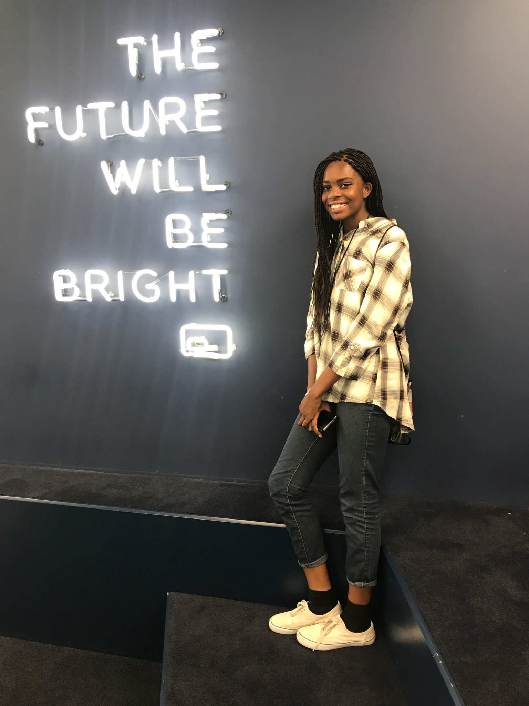
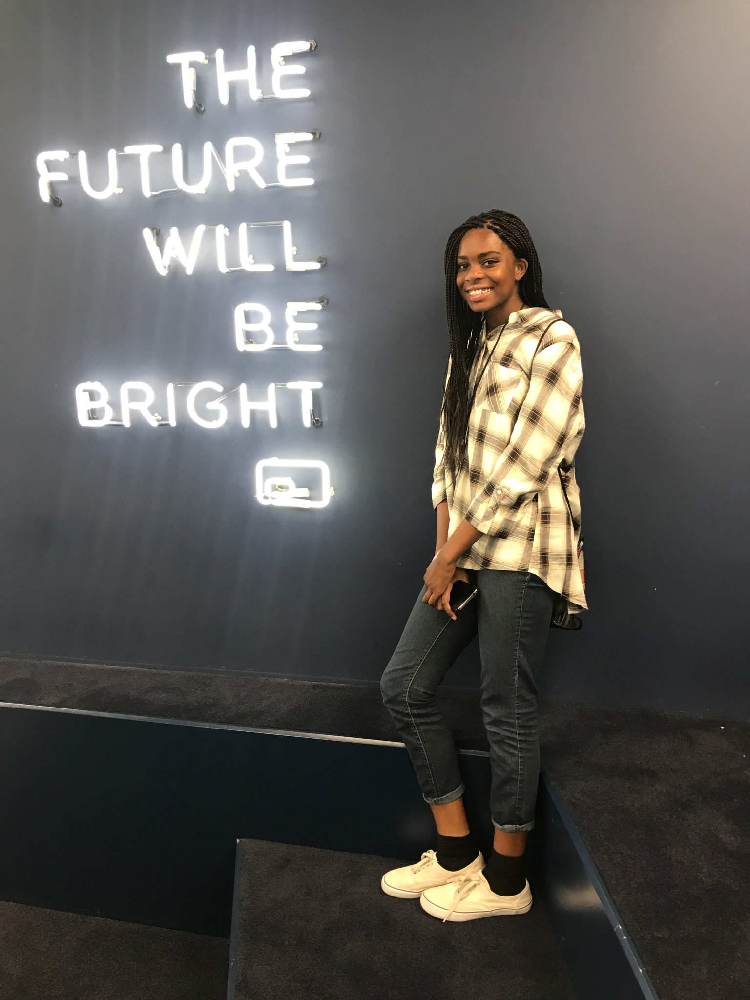

Today was officially my first day at Girls Who Code. Today we completed a simple paddle ball game in Scratch. We learned about conditionals, functions, and parameters. Conditionals were used in this program because it helped define what would end the game and what wouldn't. We used if and if-else statements inside our program. Working with a partner was really fun because we had more ideas to incorporate into our program. Today I was able to create an animation in Scratch, create a function to simplify my code, and use conditionals to change an output.
My partner and I created a game where a sprite had to dodge the falling donuts from the sky. What
works well in the game is the movement of the character and the falling donuts. However, sometimes the score would jump inconsistently. If I could
change something I would add 4 levels because currently it has 2 levels. Also there is a way to cheat the game by hanging around the edge. I would
add a barrier that would make them lose if they touch the edge. We also learned something from another group and how they scored points. In addition
to creating our game, Carmen Long came to speak to our group. Carmen Long is the a director of financial analysis and preiviously worked at Epson and
was a former Chief of Staff. It was so great to hear from an inspiring woman.
Click here to play our game!


Today we reviewed everything we learned throughout the week. We were given time to add to our Side-Scroller game. I spent this day bonding with my peers. This program is big on sisterhood and it's something I'm excited to be apart of. I have three brothers and no sisters so being apart of this sisterhood is really speacial to me.
I started my portfolio website today and typed up my previous daily entries. We started off looking at different websites' deveoper tools. I noticed that when I changed things in the developer tools, it changed on the actual website! We learned about a woman in tech nemed Nicole Dominguez. She is a freelance product designer and web developer. It was fascinating to research more about women who have impacted our technology field. I also learned the importance of making websites accessible. I have to be mindful of people who are vision impaired, hearing imparied. Also people with limited mobility and slow wifi connections. We learned about wireframes of websites and how it builds the framework for designs. I was able to edit using HTML, CSS, and a GitHub Repository.

Today I learned how to use Terminal/Command Prompt. Terminal is used to find files and applications on your computer. We learned how to work through terminal and use commands such as cd, dir, cd.., python, exit(), and more We were able to use python through the terminal. I learned about flooring/truncating in python. I also learned the operators used to solve equations in Python. Python is able to store info in many ways such as booleans, integers/floats, and strings. We experimented with loops and variables in Python. Some similarities between Python and Scratch are that they both use the similar operators, and require the same pseudocode. The differences are that the blocks of code aren't given to you and you have to have specific code syntax. Debugging my program was actually really fun! I don't know why, it kind of reminded me of a puzzle so I really enjoyed it and it wasn't that hard. Today was even better because we got our mentors today! Women of AT&T came to our room and we each were assigned a mentor. Before that Janet Ifekwunigwe gave an inspirational speech. She talked about the importance of setting goals and preparing for the future. She encouraged us to make vision boards which is something I am going to pursue. I was assigned to a mentor named Emily who is a software engineer! She showed me around her workplace at AT&T and told me about the job. It was amazing to hear and learn from her and I can't wait to our next mentor session!

At Girls Who Code, I had the opportunity to take a field trip to Full Screen Media and view their building and meet their incredible staff.We were lucky enough to meet George Strompolos, the founder of FullScreen, and help improve their new FullScreen App. We were split into six groups of three and each group was paired with a mentor. My mentor was Vincent Seah who is a Principal Data Scientist at FullScreen. My group learned about the implicit and explicit data analyzed to provide crtical feedback for the FullScreen team. My group also came up with new ideas such as live options, notifications, and an improved social part for their app. We met some of their engineers and software developers for their app which was so exciting. I can't wait to see Full Screen become something amazing!
 

Today we used Python to create a text adventure game. My partner and I created a realistic trip to the pier and mall experience. We were able to change the outcome of the game by the user's input. We used conditionals and nested conditionals. Once again we tested our code through the command prompt on our computers. Insert code photo, terminal photo, and brainstorm photo.


Today we learned about data structures and how to create filters on pictures using Python. We learned about creating lists and I created a
random Haiku Generator using for loops and lists. We were also split into groups to discuss different types of tools in python.
d My group got slicing lists. To slice a list you need to inclue [start: stop: increment] in your brackets. From the other groups,
a I learned about the difference between list.append and list.extend. I also learned about tuples and how to search a list. Tuples
are used to store an infinite amount of data that can't be changed.We were paired with a partner and
worked on a program that found the sum of all the prime numbers on the list. Our final project was to create a filter that
could be placed on a picture. We did this by acessing specific items on a list and using multi-dimensional lists to store d
different types of data. Add picture of haiku, random number, obamicon.

I really enjoyed today's lesson! Today we got a taste of digital electronics. We started off lookng at different types of robots
and defining what makes a robot one. Our class came up with the definition that robots haves to respond to iput(senses), have control schemes, and
it should have a specific purpose. We researched different robots created such as Toymail, driverless cars, disability robots by Kavita Krishnaswamy, and
drones. The second portion of our class was about circuits. We researched some of the main components which are Arduino board, Board of eEducation
shield, breadboards, jumpwires, resistors, LEDs, servos, and piezos. We then broke off into groups to build our own circuit board.
We created a series circuit with two LED lights. One of my favorite circuits we created was the series circuit with 2 LEDs and a button. I learned
a lot about circuit today. We made so may mistakes such as putting a positive and negitive wire of a light in the same row. We also made the
same mistake with resistors. I learned that the current can't pass through these wires when they are placed there. It was fun to work in
a group and fail and grow together. My idea of robots changed today because many things can be considered robots depending on who you ask.
I also learned that as great as robots are it can cause a lot of social and economic problems. Such as robots can take away jobs an worry about privacy.
However, with any change comes a lot of pros and cons. I am excited for the future of robotics and that's part of the reason that I joined
my VEX Robotics team. The chance to create new tech excites me! In addition to the great tech, we were able to hear a speaker named Lauren Wong.
She actually did the Girls Who COde Internship one summer and is now going into college. It was great hearing from someone who has
been in our shoes. She works with Social Media and Computer Science. She gave us great resources and tips for highschool and college which was
really intrsting. Now she is going to be studying Communications and Computer Science. It was great to see how Girls Who Code offered so many
opportunities for her.

Today we were able to build circuits and program on Arduino boards to create a mini light show with the LEDs. My team programed an LED to turn on an off using Arduino C and control multiple LEDs using an array. We learned about the different variables in Arduino C such as pinMode, voidSetup, digitalWrite, delay, and more. First we programmed code to make out LEDs blink. Then, we researched a couple of AMAZING women in tech. Some of them include Ayanna Howard and Manuelo Veloso. The creative work that they have done in mechanical engineering, electrical engineering, and computer science is inspiring. Some of the robots that they have built sucha NASA robots, robo cup, and even a walking helping robot. Our teamwork could have improved because not everyone ws given the chance to have hands-on experience with the ciruits, but we will definitely improve next time. I learned from this group that you have to speak up when you have an idea nd be mindful that everyone in the group gets a good learning experience. From building circuits, I learned the difference between analog vs digital. We also was able to hear from an gret speaker named Sarah. She currently is VP of Mobile Experience at AT&T. She also worked as a presss relations manager, anaylist, and more. It was exciting to see how she applies tech to her field of expertise.
We learned how the internet works today. It includes
Today we were able to program robots to dance to music!! As a dancer, this project was so FUN! We learned how to make variables in Arduino C++ and we programed robots to move forward, backward, in circles, and more to music. I learned that the pins in the circuits need to correspond to the pins you programmed in Arduino. Sometimes our robot wouldn't work because we used the wrong pins in programming. My favorite part of the robots dance is when it moved backwards in patterns on beat to the music. Manuela Veloso and Ayanna Howard used outputs for their robots by making the servors or the bodyparts of the robots set to a certain funciton. It was fun working with our group because we were all clueless and we worked together to solve the problem. Watch our video down below!
Today we built a robot to escape a box. We used Arduino Uno and built a circuit and programmed the robot using Arduino C/C++. Before working on our robot we researched different circuit components such as 3-pin header, whisker wires, phototransistors, infared leds, infared detectors, and capacitors. To build our robot we used different components such as Infared Led Sensors, servos, resistors, jumpwires, piezos, and more. I learned the difference between output and input. Digital can recieve an input and produce an output, while analog can only recieve inputs. I learned about different syntax such as pinMode and tone. I learned that tone can receive 3 different variables. The first one is for the pin, the next is for frequency, and the last one is for miliseconds. You can see more of my code below. A sensor is a object that can use tactile sensing to receive data. We used the sensors to respond to the data that was recieved using conditionals. To get our robot to escape a box we encountered many problems such as our servos were flipped and we had to change the code. We also thought our robot was messed up because it was going crazy, but the problem was that the sensors can read a great distance so we had to give it more space to complete the action. Go check out our video below!!
Django framework stuf...
Django framework stuff...
Django framework stuff...
how safe is the internet and public key encription.....
Today we learned about some different data structures such as dictionaries, lists, and data frames. We created a Venn Diagram of it below. (insert pic here)